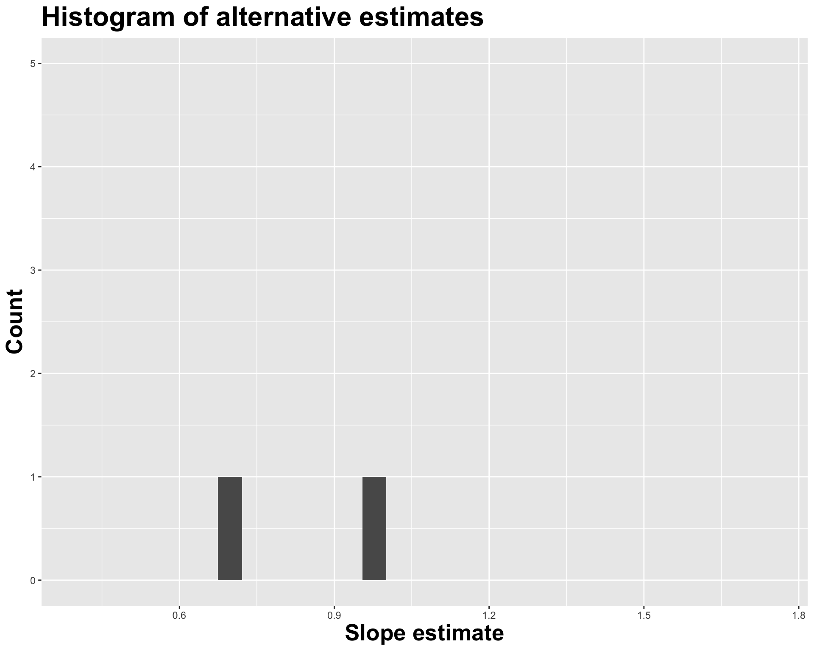
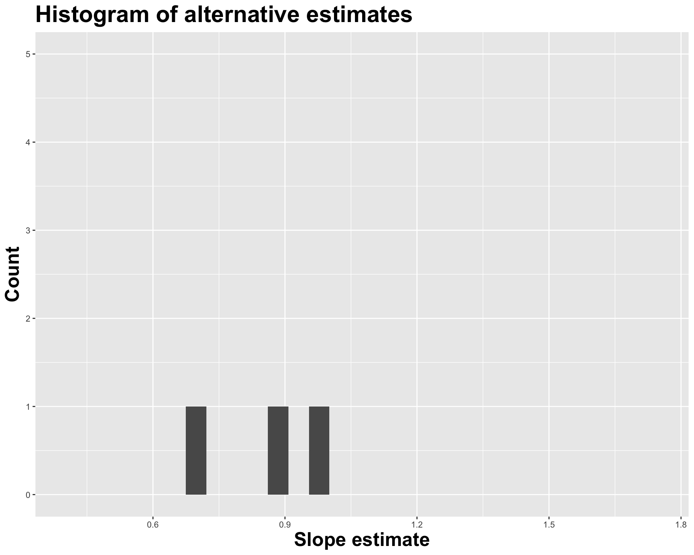
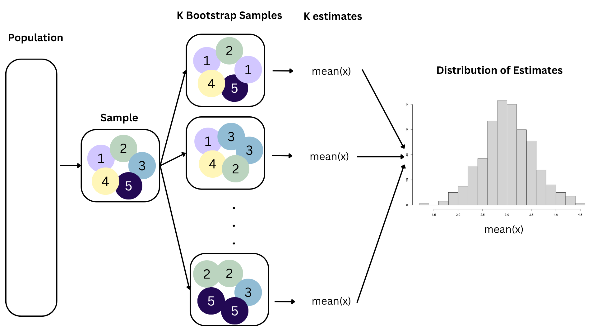
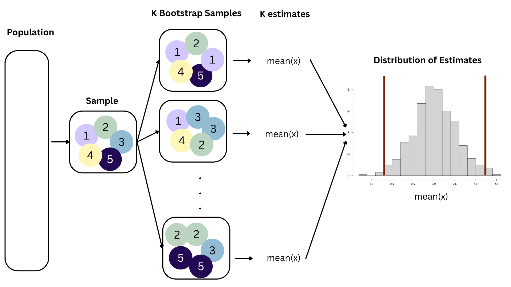
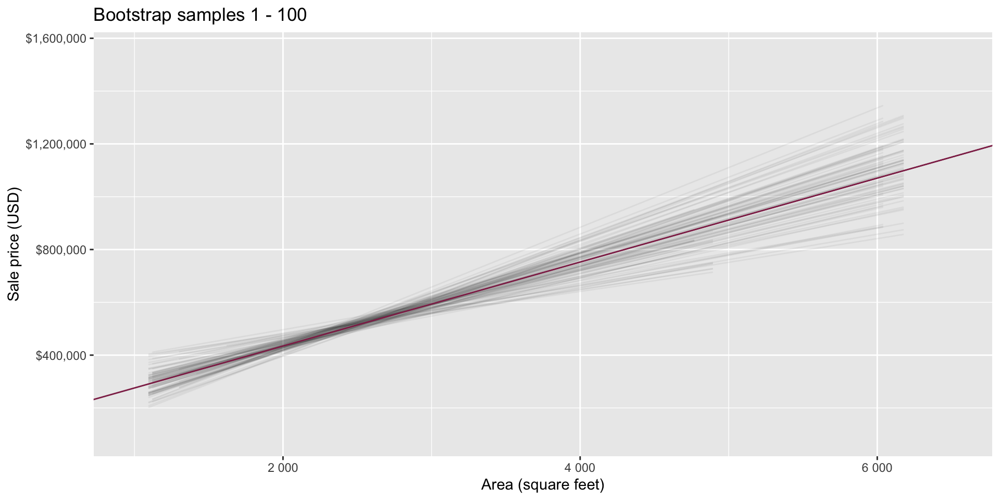
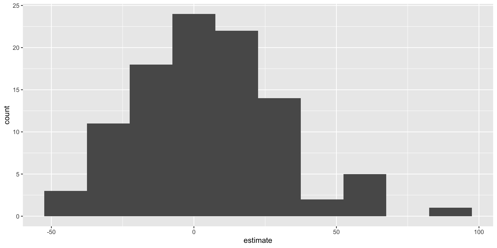
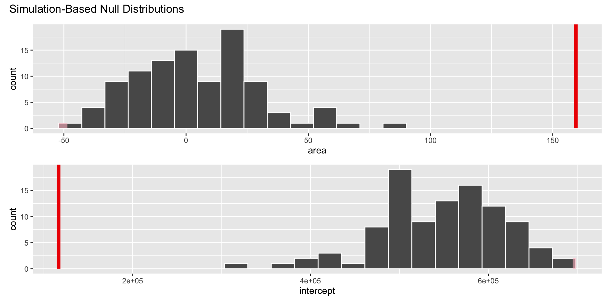
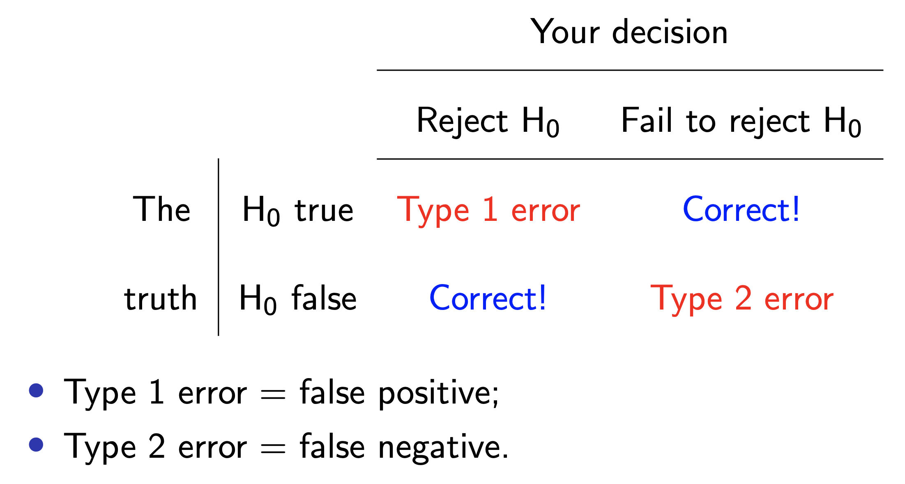
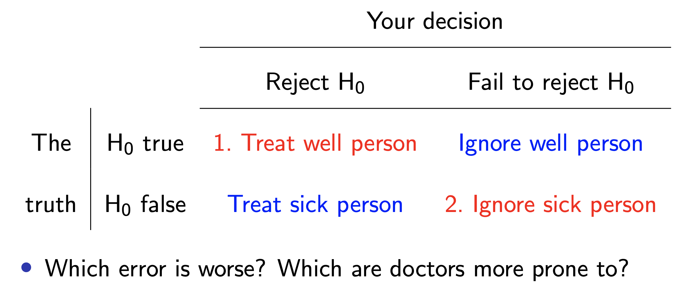
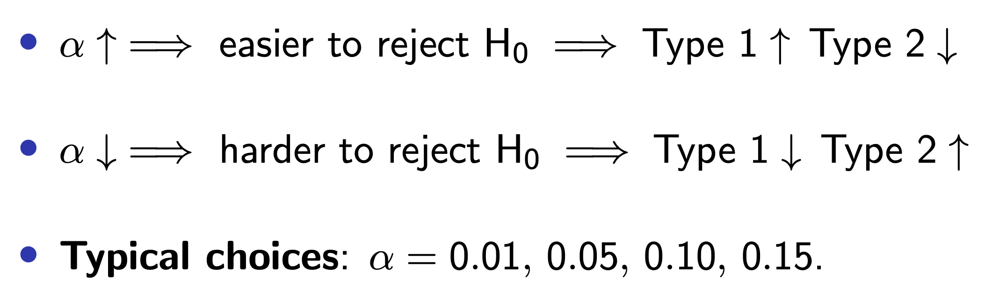

# A tibble: 2 × 2
term estimate
<chr> <dbl>
1 (Intercept) 2.94
2 log_inc 0.657Lecture 21
Go to your ae project in RStudio.
Make sure all of your changes up to this point are committed and pushed, i.e., there’s nothing left in your Git pane.
Click Pull to get today’s application exercise file: ae-17-hypothesis-testing.qmd.
Wait till the you’re prompted to work on the application exercise during class before editing the file.
# A tibble: 2 × 2
term estimate
<chr> <dbl>
1 (Intercept) 2.94
2 log_inc 0.657

# A tibble: 2 × 2
term estimate
<chr> <dbl>
1 (Intercept) 5.29
2 log_inc 0.486

# A tibble: 2 × 2
term estimate
<chr> <dbl>
1 (Intercept) 1.62
2 log_inc 0.805


How sensitive are the estimates to the data they are based on?
- Very? Then uncertainty is high, results are unreliable;
- Not very? Uncertainty is low, results are more reliable.

Data collection is costly, so we have to do our best with what we already have;
We approximate this idea of “alternative, hypothetical datasets I could have observed” by resampling our data with replacement;
We construct a new dataset of the same size by randomly picking rows out of the original one:
Repeat this processes hundred or thousands of times, and observe how the estimates vary as you refit the model on alternative datasets.
This gives you a sense of the sampling variability of your estimates.





Point estimation: report your single number best guess for the unknown quantity;
Interval estimation: report a range, or interval, or values where you think the unknown quantity is likely to live;
Unfortunately, there is a trade-off. You adjust the confidence level to try to negotiate the trade-off;
Common choices: 90%, 95%, 99%.

openintro::duke_forest

Goal: Use the area (in square feet) to understand variability in the price of houses in Duke Forest.
observed_fit <- duke_forest |>
specify(price ~ area) |>
fit()
observed_fit# A tibble: 2 × 2
term estimate
<chr> <dbl>
1 intercept 116652.
2 area 159.Fill in the blank: For each additional square foot, the model predicts the sale price of Duke Forest houses to be higher, on average, by between ___ and ___ dollars.

Fill in the blank: For each additional square foot, we expect the sale price of Duke Forest houses to be higher, on average, by between ___ and ___ dollars.


Think IQR! 50% of the bootstrap distribution is between the 25% quantile on the left and the 75% quantile on the right. But we want more than 50%
90% of the bootstrap distribution is between the 5% quantile on the left and the 95% quantile on the right;
95% of the bootstrap distribution is between the 2.5% quantile on the left and the 97.5% quantile on the right;
And so on.
Population: Complete set of observations of whatever we are studying, e.g., people, tweets, photographs, etc. (population size = \(N\))
Sample: Subset of the population, ideally random and representative (sample size = \(n\))
Sample statistic \(\ne\) population parameter, but if the sample is good, it can be a good estimate
Statistical inference: Discipline that concerns itself with the development of procedures, methods, and theorems that allow us to extract meaning and information from data that has been generated by stochastic (random) process
We report the estimate with a confidence interval, and the width of this interval depends on the variability of sample statistics from different samples from the population
Since we can’t continue sampling from the population, we bootstrap from the one sample we have to estimate sampling variability
A hypothesis test is a statistical technique used to evaluate competing claims using data
Null hypothesis, \(H_0\): An assumption about the population. “There is nothing going on.”
Alternative hypothesis, \(H_A\): A research question about the population. “There is something going on”.
. . .
Note: Hypotheses are always at the population level!
Null hypothesis, \(H_0\): “There is nothing going on.” The slope of the model for predicting the prices of houses in Duke Forest from their areas is 0, \(\beta_1 = 0\).
Alternative hypothesis, \(H_A\): “There is something going on”. The slope of the model for predicting the prices of houses in Duke Forest from their areas is different than, \(\beta_1 \ne 0\).
Assume you live in a world where null hypothesis is true: \(\beta_1 = 0\).
Ask yourself how likely you are to observe the sample statistic, or something even more extreme, in this world: \(P(b_1 \leq 159.48~or~b_1 \geq 159.48 | \beta_1 = 0)\) = ?
Null hypothesis, \(H_0\): Defendant is innocent
Alternative hypothesis, \(H_A\): Defendant is guilty
. . .
. . .
Null hypothesis, \(H_0\): patient is fine
Alternative hypothesis, \(H_A\): patient is sick
. . .
. . .
Start with a null hypothesis, \(H_0\), that represents the status quo
Set an alternative hypothesis, \(H_A\), that represents the research question, i.e. what we’re testing for
Conduct a hypothesis test under the assumption that the null hypothesis is true and calculate a p-value (probability of observed or more extreme outcome given that the null hypothesis is true)
… which we have already done:
observed_fit <- duke_forest |>
specify(price ~ area) |>
fit()
observed_fit# A tibble: 2 × 2
term estimate
<chr> <dbl>
1 intercept 116652.
2 area 159.null_dist# A tibble: 200 × 3
# Groups: replicate [100]
replicate term estimate
<int> <chr> <dbl>
1 1 intercept 547294.
2 1 area 4.54
3 2 intercept 568599.
4 2 area -3.13
5 3 intercept 561547.
6 3 area -0.593
7 4 intercept 526286.
8 4 area 12.1
9 5 intercept 651476.
10 5 area -33.0
# ℹ 190 more rowsnull_dist |>
filter(term == "area") |>
ggplot(aes(x = estimate)) +
geom_histogram(binwidth = 15)
visualize(null_dist) +
shade_p_value(obs_stat = observed_fit, direction = "two-sided")
null_dist |>
get_p_value(obs_stat = observed_fit, direction = "two-sided")# A tibble: 2 × 2
term p_value
<chr> <dbl>
1 area 0
2 intercept 0Based on the p-value calculated, what is the conclusion of the hypothesis test?

\(H_0\) person innocent vs \(H_A\) person guilty

\(H_0\) person well vs \(H_A\) person sick.

Pick a threshold \(\alpha\in[0,\,1]\) called the discernibility level and threshold the \(p\)-value:
. . .
